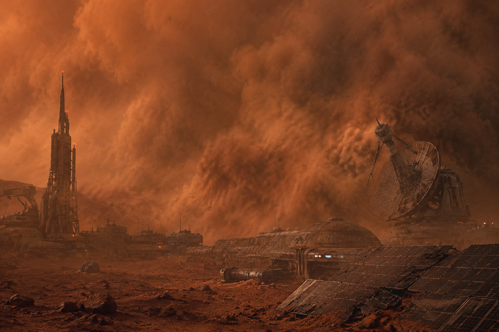

RESEARCH PROJECT DESIGNATION
공간잇기
空間
+
IT
+
Geo
수직이 잇는 공간
·
손끝이 여는 기하
KOSA-1 · GROUND CONTROL TERMINAL
REC

📡 KOSA-1 EMERGENCY SIGNAL
SIGNAL LOST...
LAT 88.2°S · LON 114.7°E | 2047.09.14 03:22 KST
MISSION BRIEFING
TARGET UNIT
공간도형 · 삼수선 · 정사영
대원 자격
(CREW)
고등학교 2학년 이상
KOSA-1
화성기지와의 통신이 두절되었습니다.
복구 임무를 시작합니다.
▶ START MISSION